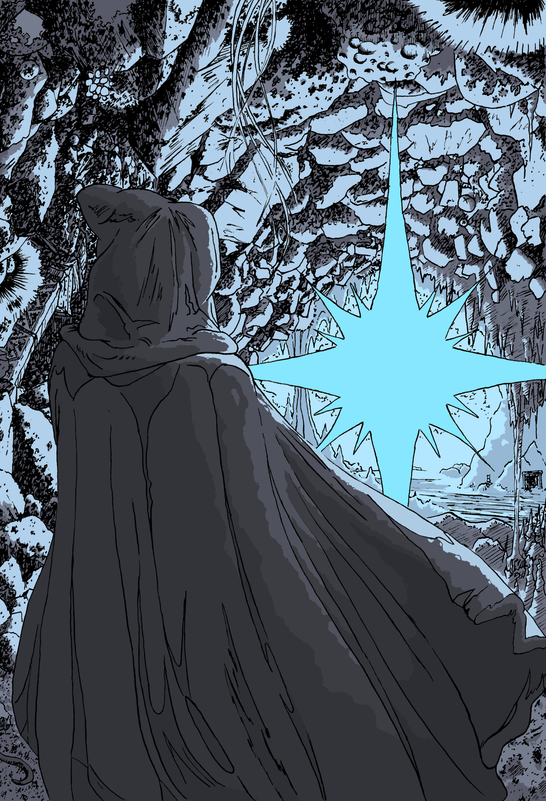
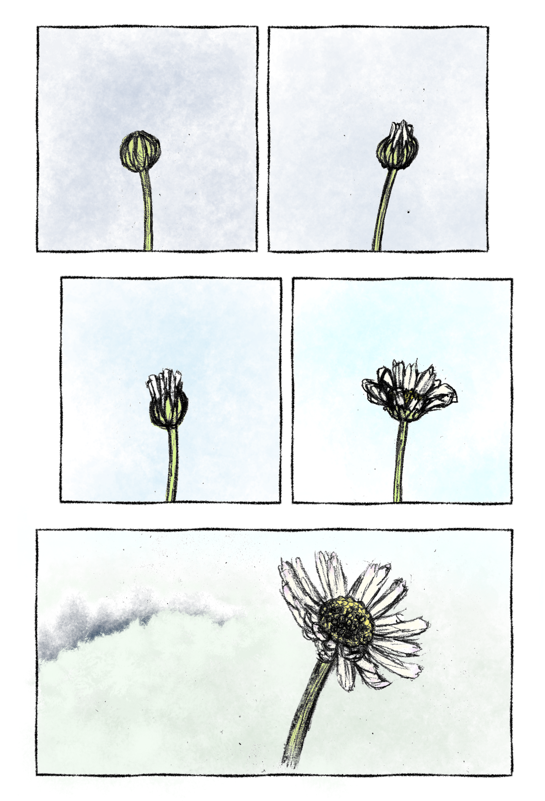
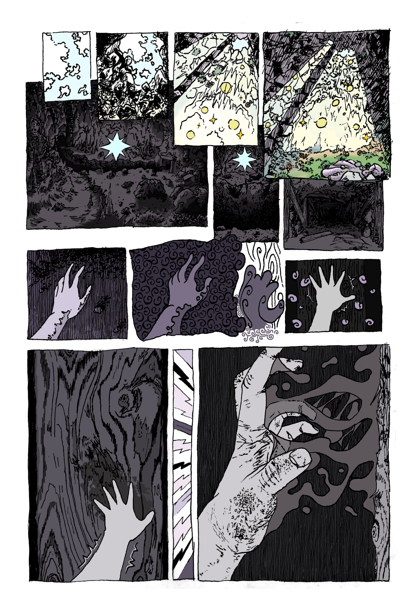
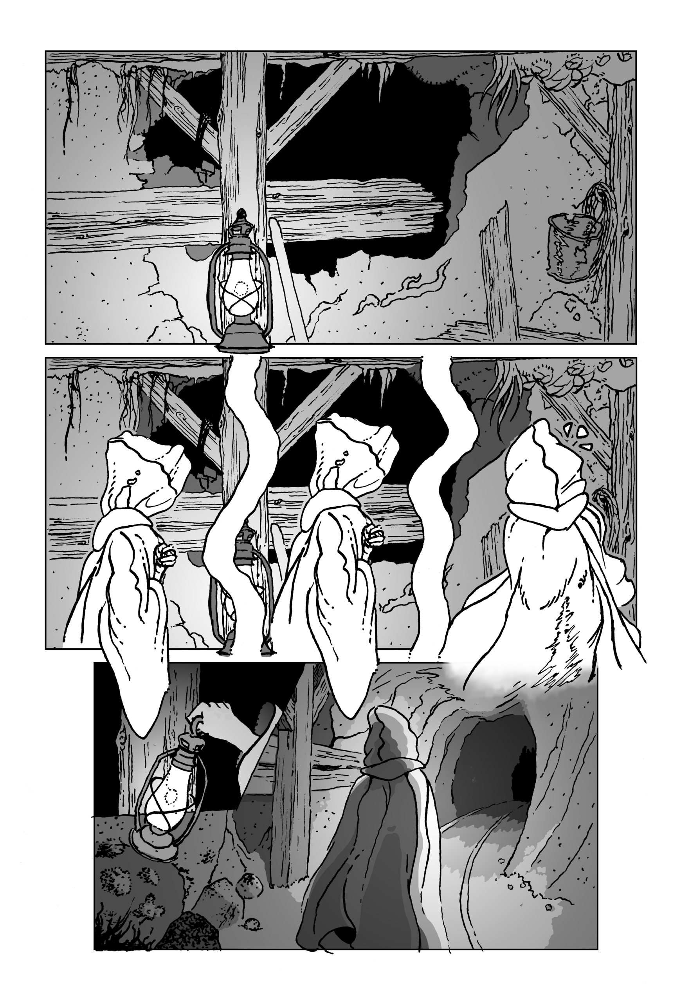
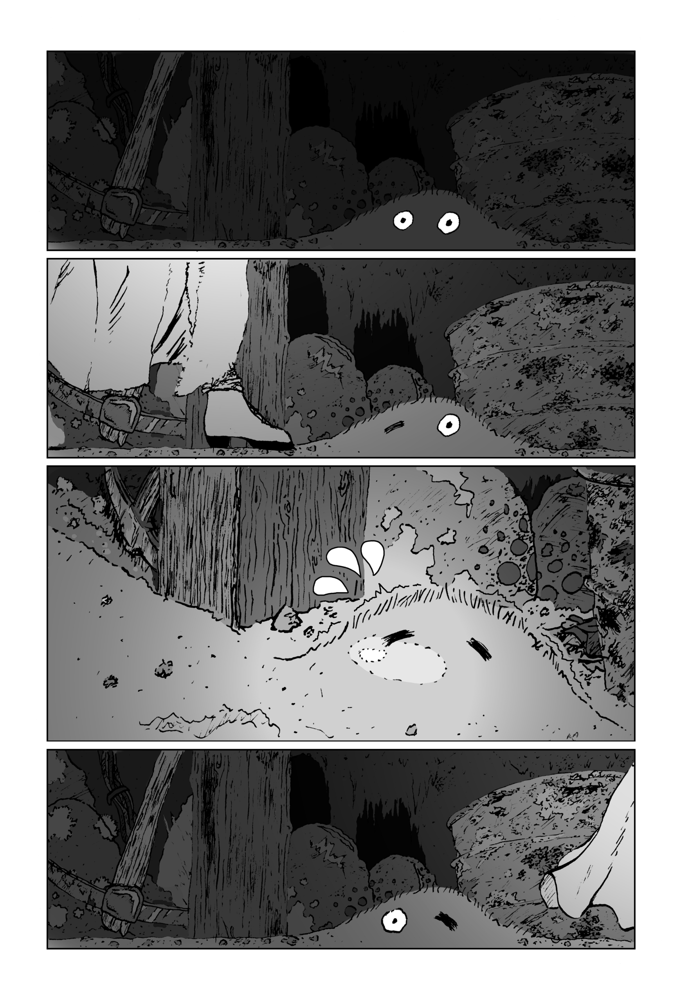
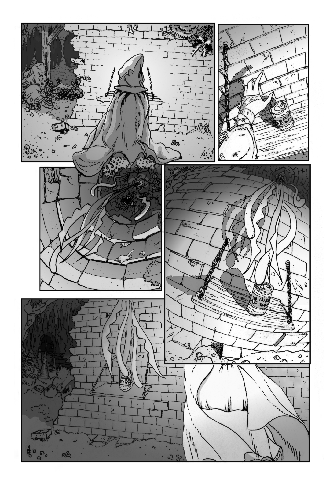

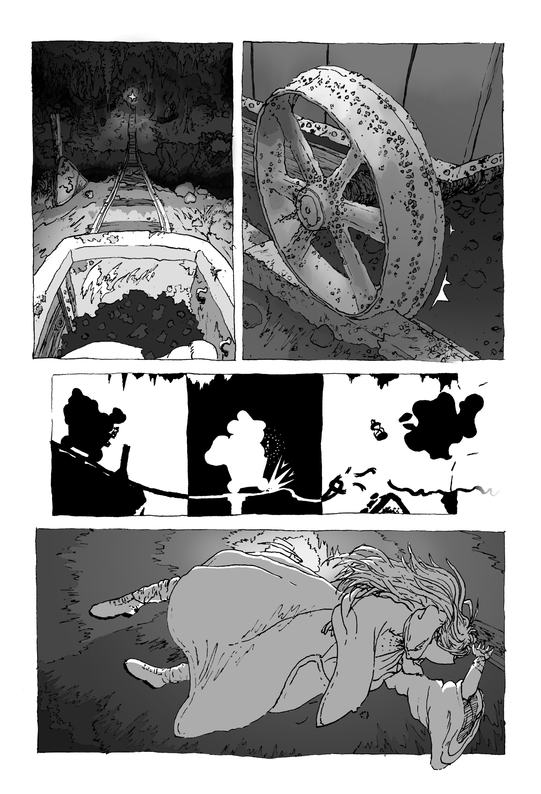

 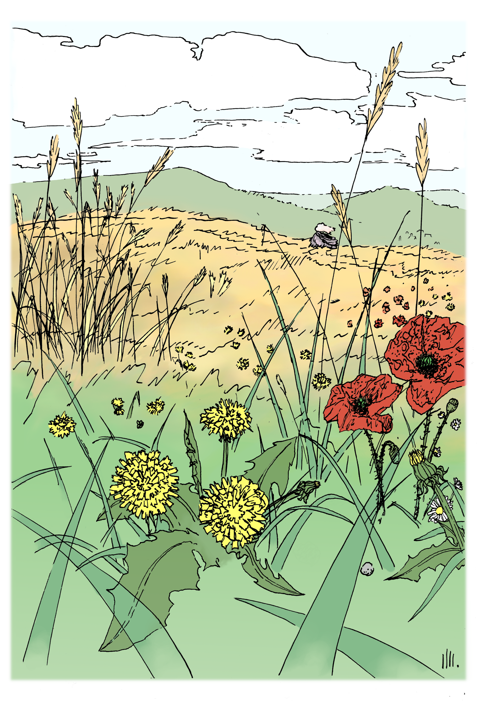
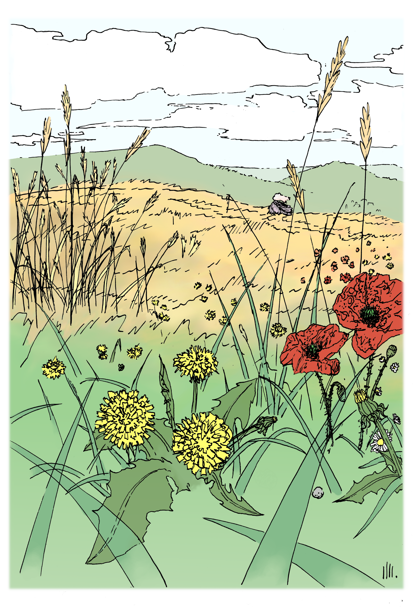
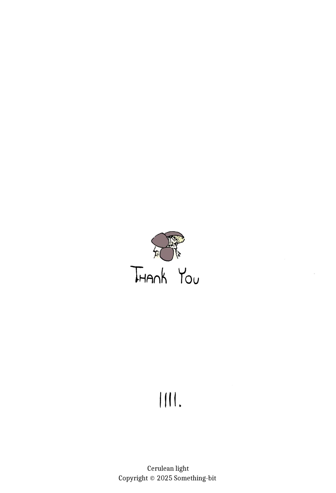
A brief wordless adventure!
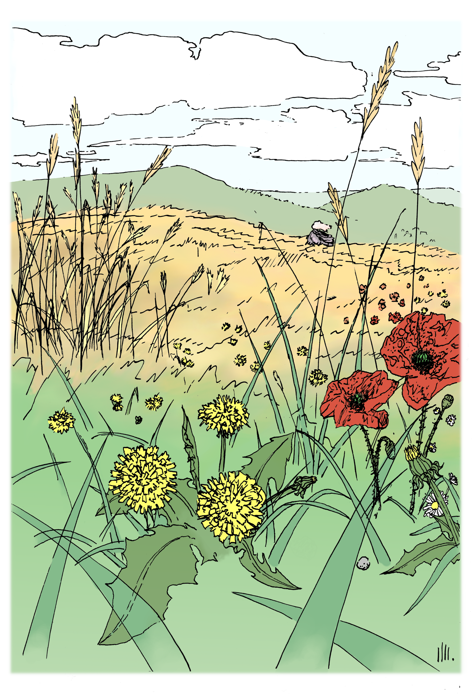
Cerulean Light is a short wordless comic made by me (Something-bit).
It's dip pen lineart with digital shading
It was made as a summer project to test comic making on a small scale, it turns out there's many hard parts besides the art!
I also figured out Gimp is fine until one butterfinger moment overwrites an importae salvagednt file.
If you notice the colorbanding around the clock panel, that's th part, it used to have color...
Make backups!
Fun fact, it was actually never put into words while being made, the only script was rough sketches drawn on A6 / A5 papers (the final pages were made on A5 pages). This approach was pretty pleasant, would recommned.
What was not so pleasant was that I didn't make the pages in chronological order, and did not decide on some details in the rough sketch phase, meaning some inconsistencies happened. I fixed almost all of them, but I'd try to stick with chronological order (outside title page) next time because it prevents new ideas from being incompatible.
(Go back)